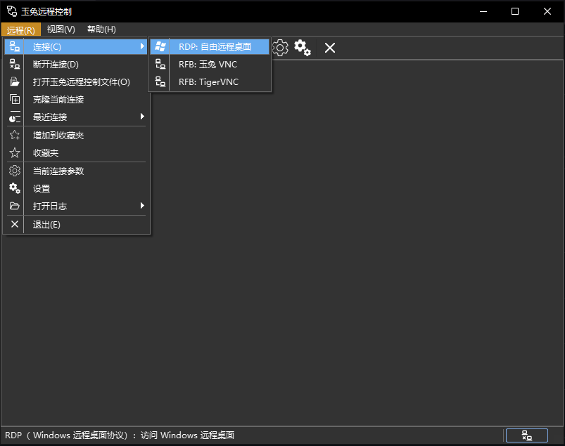
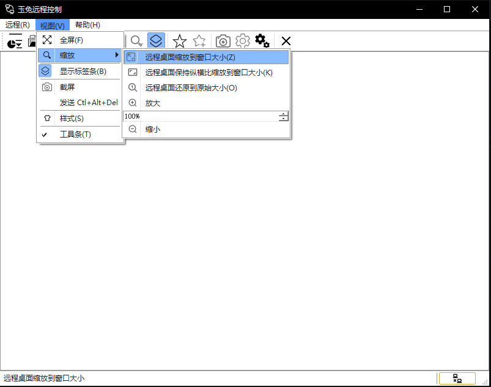

|
Rabbit Remote Control v0.0.26
|
Loading...
Searching...
No Matches
|
Rabbit Remote Control v0.0.26
|
作者: 康林 kl222.nosp@m.@126.nosp@m..com
玉兔远程控制是一个跨平台，支持多协议的远程控制软件。
能让你在**任何地方**使用**任何设备和系统**通过**任意方式**远程管理**任意设备和系统**。
它包括远程桌面、远程终端等远程控制功能。
| 主窗口 | 最近列表窗口 | 连接窗口 |
|---|---|---|
 |
| 默认样式 | 黑绿样式 | 黑色样式 | 白色样式 |
|---|---|---|---|
 | |  |  |
参见：https://doc.qt.io/qt-5/supported-platforms.html
未选中的操作系统是因为本人没有设备，所以没有做编译与测试。请有设备的朋友自行测试。 欢迎有兴趣，有能力的朋友参与项目的开发。
如果你想为.nosp@m.本人捐赠.nosp@m.开发设备，.nosp@m.请联系：.nosp@m.kl222.nosp@m.@126.nosp@m..com
| Windows | Unix/linux | Android | MAC | IPHONE | WINCE | |
|---|---|---|---|---|---|---|
| vnc | ✓ | ✓ | ||||
| RDP | ✓ | ✓ | ||||
| Spice | ||||||
| Scrcpy | ||||||
| 终端 | ✓ | |||||
| SSH | ✓ | |||||
| TELNET | ✓ | |||||
| FTP |
图例： ✓ : 完成; …… : 正在工作; ⭕ : 未完成; 空：未开始; ❌: 不支持
| 服务器 | 客户端 | 远程桌面 | 剪切板 | 文件传输 | 音频传输 | 资源重定向 | P2P | 代理 | 终端 | |
|---|---|---|---|---|---|---|---|---|---|---|
| RDP | ✓ | ✓ | ✓ | ✓ | …… | ✓ | …… | ❌ | ||
| RFB | …… | ✓ | ✓ | ✓ | ❌ | ❌ | ✓ | ✓ | ||
| Spice | ❌ | |||||||||
| Scrcpy | ❌ | |||||||||
| 终端 | ⭕ | ❌ | ✓ | ❌ | ❌ | ❌ | ||||
| TELNET | ⭕ | ❌ | ✓ | ❌ | ❌ | ❌ | ||||
| SSH | ⭕ | ❌ | ✓ | ❌ | ❌ | |||||
| FTP | ❌ | ❌ | ❌ |
图例： ✓ : 完成; …… : 正在工作; ⭕ : 未完成; 空：未开始; ❌: 不支持
| 代理 | P2P | |
|---|---|---|
| RabbitVNC | ✓ | ✓ |
| TigerVNC | ✓ | ✓ |
| LibVNC | ||
| FreeRDP |
图例： ✓ : 完成; …… : 正在工作; ⭕ : 未完成; 空：未开始; ❌: 不支持


| master 分支 | develop 分支 | |
|---|---|---|
| Linux | ||
| Windows | ||
| Android |
本软件如果对你有用，或者你喜欢它，请你捐赠，支持作者。谢谢！

如果不能显示，请打开：
如果您想知道如何提供帮助，不要害怕，有很多方法：
| 服务器 | 客户端 | 远程桌面 | 剪切板 | 文件传输 | 音频传输入 | 资源重定向 | P2P | 代理 | 终端 | |
|---|---|---|---|---|---|---|---|---|---|---|
| RabbitVNC | …… | ✓ | ✓ | ✓ | ❌ | ❌ | ✓ | ✓ | ||
| TigerVNC | …… | ✓ | ✓ | ✓ | ❌ | ❌ | ✓ | ✓ | ||
| LibVNCServer | ✓ | ✓ | ✓ | ✓ | ❌ | ❌ | ||||
| RDP | ✓ | ✓ | ✓ | ✓ | …… | ✓ | …… | ❌ | ||
| Spice | ❌ | |||||||||
| Scrcpy | ❌ | |||||||||
| 终端 | ⭕ | ❌ | ✓ | ❌ | ❌ | |||||
| SSH | ⭕ | ❌ | ✓ | ❌ | ❌ | |||||
| TELNET | ⭕ | ❌ | ✓ | ❌ | ❌ | ❌ | ||||
| FTP | ❌ | ❌ | ❌ |
图例： ✓ : 完成; …… : 正在工作; ⭕ : 未完成; 空：未开始; ❌: 不支持
sudo apt install ./rabbitremotecontrol_0.0.26_amd64_Ubuntu-20.04.deb # 如要你是在老的 linux 发行版本上，你需要用下列命令替换： # sudo dpkg -i rabbitremotecontrol_0.0.26_amd64_Ubuntu-20.04.deb # sudo apt-get install -f # 安装依赖
sudo apt install ./rabbitremotecontrol_0.0.26_amd64_Ubuntu-18.04.deb # 如要你是在老的 linux 发行版本上，你需要用下列命令替换： # sudo dpkg -i rabbitremotecontrol_0.0.26_amd64_Ubuntu-18.04.deb # sudo apt-get install -f # 安装依赖
请遵守本项目License.md和依赖库的许可协议，并感谢依赖库和工具的作者。


](https://gitlab.com/kl222/RabbitCommon/-/raw/master/Src/Resource/image/Contribute.png){kind=link}
{kind=link}